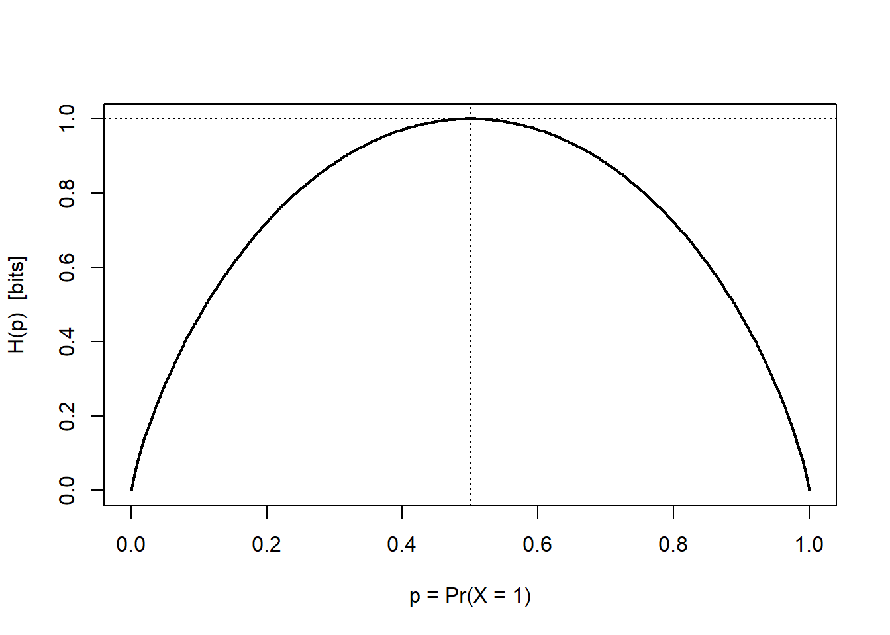

flowchart LR S["Source<br/>(firm intent)"] --> E["Encoder<br/>(creative, copy)"] E --> C["Channel<br/>(media)"] N["Noise<br/>(clutter,<br/>competition)"] --> C C --> D["Decoder<br/>(consumer<br/>perception)"] D --> R["Destination<br/>(action: choice,<br/>WOM, search)"]
37 Information Theory
Every marketing act is, at bottom, an act of communication: a firm encodes an intention—about quality, identity, price, or fit—into a signal, sends that signal through a noisy channel, and hopes a consumer decodes something close to what was sent. The discipline spends enormous sums on the encoding (creative, copy, design) and on buying the channel (media), yet the quantity that ultimately matters is how much uncertainty about the consumer’s eventual action the message resolves. That quantity—information, measured in bits—is not a metaphor. It is a precise, additive, model-free statistic with a century of theory behind it, and it gives marketing a common currency for problems that otherwise look unrelated: how surprising a brand name is, how much a segmentation variable tells us about response, how redundant two ad exposures are, and how much a recommendation system can possibly learn about a user.
This chapter develops that currency. We begin with Shannon (1948)’s model of communication and the single construct on which everything else rests—entropy, the average uncertainty in a random outcome. We then build the relational quantities marketing actually uses: mutual information (how much one variable tells us about another), relative entropy or Kullback–Leibler divergence (how costly it is to act on the wrong belief about a market), and the channel capacity that bounds how much any message can convey. Throughout, intuition leads and the formalism follows immediately and in full, with reproducible R for every estimator. The information-theoretic view recurs later in the book—in the surprise-driven account of virality (Chapter 22), in the attention economics of advertising (Chapter 8), and in the entropy-based diagnostics used for text and image data (Chapter 40)—so it earns a careful treatment here.
Scope and software
The worked examples use base R together with the philentropy package, which implements the standard distance and information measures over discrete distributions. We treat probabilities as known in the formal development and return to the harder problem—estimating these quantities from finite marketing data, where naive plug-in estimators are badly biased—in the section on estimation.
37.1 The Mathematical Theory of Communication
Shannon (1948) framed communication as a chain of five components: an information source that produces a message, a transmitter that encodes it into a signal, a channel that carries the signal and injects noise, a receiver that decodes, and a destination. Weaver, Shannon, et al. (1963), in the expository companion that popularized the theory, organized the problems of communication into three levels—the technical problem (how accurately can symbols be transmitted?), the semantic problem (how precisely do the transmitted symbols convey the intended meaning?), and the effectiveness problem (how effectively does the received meaning change conduct?). Marketing communication research lives mostly at the second and third levels, but Shannon’s theory, which solves the first, supplies the measurement scaffolding for all three (Severin, Tankard, et al. 1997). Figure 37.1 recasts this five-component chain in marketing terms.
The crucial move is to treat the message as a random variable. Before the consumer is exposed, her eventual perception or action is uncertain; the message is informative exactly insofar as it reduces that uncertainty. Shannon’s contribution was to show that the average reduction in uncertainty has a unique measure—up to choice of units—satisfying a short list of intuitive axioms (continuity, monotonicity in the number of equally likely outcomes, and additivity over independent sub-choices). That measure is entropy.
“The fundamental problem of communication is that of reproducing at one point either exactly or approximately a message selected at another point.”
— Shannon (1948)
37.2 Entropy: The Measure of Uncertainty
Let \(X\) be a discrete random variable taking values in a finite alphabet \(\{x_1,\dots,x_n\}\) with probability mass function \(\mathbf{p}_X = (p_1,\dots,p_n)\), where \(p_i = \Pr(X = x_i)\). The entropy of \(X\) is the expected value of the surprise of its outcomes, where the surprise of an outcome of probability \(p\) is \(\log(1/p)\)—rare outcomes are surprising, certain outcomes are not. Formally,
\[ H(\mathbf{p}_X) \;=\; -\sum_{i=1}^{n} p_i \log_2 p_i \;=\; \mathbb{E}\!\left[\log_2 \frac{1}{p(X)}\right]. \tag{37.1}\]
Entropy is the average number of yes/no questions needed to pin down the value of \(X\) under an optimal questioning strategy, and equivalently the minimum expected number of bits needed to encode \(X\) without loss (Shannon 1948; Zwillinger 1995, 262). The base of the logarithm fixes only the unit: base 2 gives bits, base \(e\) gives nats, and base 10 gives dits (or hartleys). Units convert by a constant factor, because for any bases \(a\) and \(b\), \(\log_a k = \log_a b \cdot \log_b k\), so
\[ H_b(X) \;=\; (\log_b a)\, H_a(X). \tag{37.2}\]
Two properties make entropy the right primitive. First, it depends only on the distribution of \(X\), not on the labels of the outcomes: relabeling brands does not change how hard the market is to predict. Second, it is maximized by the uniform distribution and minimized by a degenerate one:
\[ 0 \;\le\; H(\mathbf{p}_X) \;\le\; \log_2 n, \qquad H(\mathbf{p}_X) = \log_2 n \iff X \sim \mathrm{Uniform}. \]
A market in which all \(n\) brands hold equal share is maximally uncertain (\(\log_2 n\) bits); a monopolized market is perfectly predictable (0 bits). This is why entropy and its monotone transforms appear as concentration and diversity indices—the exponential of entropy, \(e^{H}\), is the effective number of equally likely outcomes, a model-free analogue of the number of meaningful competitors.
37.2.1 The Binary Case
The simplest instance fixes intuition. If \(X\) has two outcomes with \(\mathbf{p}_X = (p, 1-p)\), entropy reduces to the binary entropy function
\[ H_b(p) \;=\; -p\log_2 p - (1-p)\log_2(1-p), \tag{37.3}\]
which is symmetric about \(p = \tfrac{1}{2}\), equals \(0\) at \(p \in \{0,1\}\) (a sure outcome carries no information), and peaks at exactly \(1\) bit when \(p = \tfrac{1}{2}\) (a fair coin is maximally uncertain). A churn flag, a click/no-click outcome, or a buy/no-buy decision is a Bernoulli draw whose predictive difficulty is summarized by this curve: a campaign that pushes a 50/50 audience toward 90/10 has removed \(1 - H_b(0.1) \approx 0.53\) bits of uncertainty about who will convert.
Code
H_binary <- function(p) {
# 0 log 0 := 0 by continuity; guard the endpoints
ifelse(p == 0 | p == 1, 0, -p * log2(p) - (1 - p) * log2(1 - p))
}
p_grid <- seq(0, 1, length.out = 200)
plot(p_grid, H_binary(p_grid), type = "l", lwd = 2,
xlab = "p = Pr(X = 1)", ylab = "H(p) [bits]")
abline(v = 0.5, lty = 3); abline(h = 1, lty = 3)
For a general (non-binary) distribution, the philentropy package computes 1 directly. The example below uses a skewed ten-outcome distribution, whose entropy lies strictly below the uniform maximum of \(\log_2 10 \approx 3.32\) bits.
Code
library(philentropy)
Prob <- (1:10) / sum(1:10) # a skewed 10-outcome distribution
H(Prob) # Shannon entropy, in bits
#> [1] 3.103643
log2(10) # uniform maximum for comparison
#> [1] 3.32192837.3 Mutual Information: How Much One Variable Tells Us About Another
Marketing rarely cares about a single variable in isolation; it cares about association—does knowing a consumer’s segment tell us anything about her response? The information-theoretic answer is mutual information, the reduction in uncertainty about \(Y\) from learning \(X\) (equivalently, about \(X\) from learning \(Y\); the quantity is symmetric). Let \(X\) and \(Y\) have joint distribution \(\mathbf{p}_{X\times Y}\) with marginals \(\mathbf{p}_X\) and \(\mathbf{p}_Y\). Then
\[ I(X;Y) \;=\; H(\mathbf{p}_X) + H(\mathbf{p}_Y) - H(\mathbf{p}_{X\times Y}) \;=\; \sum_{i=1}^{n}\sum_{j=1}^{m} p(x_i,y_j)\,\log_2 \frac{p(x_i,y_j)}{p(x_i)\,p(y_j)}. \tag{37.4}\]
The first form is an inclusion–exclusion identity: the information shared by \(X\) and \(Y\) is what their separate uncertainties double-count once they are observed jointly. The second form reveals what mutual information is—the relative entropy (defined below) between the true joint distribution and the product of marginals that would obtain under independence. It therefore measures how far \(X\) and \(Y\) are from independent, and it has the defining properties
\[ I(X;Y) \;\ge\; 0, \qquad I(X;Y) = 0 \iff X \perp Y, \qquad I(X;X) = H(X). \]
The last identity—self-information equals entropy—says a variable tells us everything about itself, namely its own entropy. Unlike Pearson correlation, mutual information detects any statistical dependence, linear or not, which makes it a natural screening statistic for nonlinear feature selection, for quantifying how diagnostic a targeting variable is, and for measuring the redundancy between two media exposures.1
37.4 Relative Entropy: The Cost of the Wrong Belief
Suppose a manager believes the market follows distribution \(q\) when it truly follows \(p\)—she has mis-segmented, mis-forecast demand, or trained a model on a stale population. How costly is that error, measured in the only currency we have, bits? The answer is the relative entropy, or Kullback–Leibler (KL) divergence, of \(p\) from \(q\):
\[ D_{\mathrm{KL}}(p \,\|\, q) \;=\; \sum_{x} p(x)\,\log_2 \frac{p(x)}{q(x)}, \tag{37.5}\]
with the conventions \(0\log\tfrac{0}{q}=0\) and \(p\log\tfrac{p}{0}=\infty\). \(D_{\mathrm{KL}}(p\,\|\,q)\) is the expected number of extra bits incurred by coding outcomes drawn from \(p\) using a code optimized for \(q\)—the avoidable inefficiency of acting on the wrong model. It satisfies Gibbs’ inequality,
\[ D_{\mathrm{KL}}(p \,\|\, q) \;\ge\; 0, \qquad D_{\mathrm{KL}}(p \,\|\, q) = 0 \iff p = q, \]
so the truth is always (weakly) the most efficient belief to hold. Two cautions matter in practice. First, KL divergence is not a metric: it is asymmetric, \(D_{\mathrm{KL}}(p\,\|\,q) \neq D_{\mathrm{KL}}(q\,\|\,p)\) in general, and violates the triangle inequality. Which direction to use is a modeling decision—the “forward” divergence \(D_{\mathrm{KL}}(p\,\|\,q)\) penalizes a belief \(q\) that places little mass where \(p\) is large (missing real demand), whereas the “reverse” divergence penalizes \(q\) that spreads mass where \(p\) is zero (chasing phantom demand). Second, it is unbounded and undefined when \(q\) assigns zero probability to an outcome that actually occurs, which is precisely why symmetrized, bounded alternatives are often preferred for comparing market structures.
Connection to mutual information and likelihood
Mutual information is exactly the KL divergence between the joint distribution and the independence benchmark: \(I(X;Y) = D_{\mathrm{KL}}\!\big(p_{X\times Y} \,\|\, p_X\, p_Y\big)\). And KL divergence is the population analogue of the log-likelihood ratio: maximizing a log-likelihood is, asymptotically, minimizing the KL divergence between the data’s true distribution and the fitted model. Information theory and maximum-likelihood estimation are two views of the same object.
37.4.1 Symmetrized and Bounded Divergences
When the task is to compare two empirical distributions—two creative variants’ click profiles, two cities’ category-share vectors, this month’s versus last month’s search-term mix—analysts usually want a symmetric, finite measure. The Jensen–Shannon (JS) divergence averages each distribution against their mixture \(m = \tfrac{1}{2}(p+q)\):
\[ \mathrm{JSD}(p \,\|\, q) \;=\; \tfrac{1}{2} D_{\mathrm{KL}}(p \,\|\, m) + \tfrac{1}{2} D_{\mathrm{KL}}(q \,\|\, m), \qquad m = \tfrac{1}{2}(p + q). \tag{37.6}\]
Because \(m\) has support wherever either \(p\) or \(q\) does, JS divergence is always finite; it is symmetric by construction; it is bounded in \([0,1]\) bits; and its square root is a true metric on the space of distributions. The three measures sit in a clear hierarchy, summarized in Table 37.1.
| Measure | Formula | Symmetric? | Bounded? | Metric? | Typical marketing use |
|---|---|---|---|---|---|
| KL divergence | \(\sum_x p\log\frac{p}{q}\) | No | No | No | Coding/inference cost of a wrong model; basis of likelihood |
| Jensen–Shannon | \(\tfrac12 D_{\mathrm{KL}}(p\|m)+\tfrac12 D_{\mathrm{KL}}(q\|m)\) | Yes | \([0,1]\) bit | \(\sqrt{\cdot}\) is | Comparing two empirical distributions (segments, periods) |
| Generalized JS | weighted \(\sum_k \pi_k D_{\mathrm{KL}}(p_k\|\bar p)\) | Yes | Yes | — | Dispersion across \(\ge 3\) distributions (e.g., regional mixes) |
Code
# Two campaign click-profiles over five creative slots
p <- c(0.30, 0.25, 0.20, 0.15, 0.10)
q <- c(0.10, 0.15, 0.20, 0.25, 0.30)
# Asymmetry of KL: the two directions differ
KL_pq <- suppressMessages(KL(rbind(p, q), unit = "log2"))
KL_qp <- suppressMessages(KL(rbind(q, p), unit = "log2"))
# Jensen-Shannon: symmetric and bounded in [0, 1] bits
JSD_pq <- suppressMessages(JSD(rbind(p, q), unit = "log2"))
c(KL_p_to_q = as.numeric(KL_pq),
KL_q_to_p = as.numeric(KL_qp),
JSD = as.numeric(JSD_pq))
#> KL_p_to_q KL_q_to_p JSD
#> 0.39068906 0.39068906 0.0937151537.5 Joint and Conditional Entropy
To reason about messages and responses together we need the entropy of pairs. The joint entropy of \((X,Y)\) is the uncertainty in the pair,
\[ H(X,Y) \;=\; -\sum_{i=1}^{n}\sum_{j=1}^{m} p(x_i,y_j)\,\log_2 p(x_i,y_j), \tag{37.7}\]
and the conditional entropy \(H(Y\mid X)\) is the uncertainty that remains in \(Y\) once \(X\) is known,
\[ H(Y\mid X) \;=\; -\sum_{i=1}^{n}\sum_{j=1}^{m} p(x_i,y_j)\,\log_2 \frac{p(x_i,y_j)}{p(x_i)}. \tag{37.8}\]
These are bound together by the chain rule and its multivariate extension,
\[ H(X,Y) = H(X) + H(Y\mid X) = H(Y) + H(X\mid Y), \qquad H(X_1,\dots,X_n) = \sum_{i=1}^{n} H(X_i \mid X_{i-1},\dots,X_1), \tag{37.9}\]
which simply says the total uncertainty of a sequence is the running sum of each variable’s new uncertainty given everything before it. The remaining structural facts follow directly and have clean marketing readings:
- Conditioning cannot increase entropy: \(0 \le H(Y\mid X) \le H(Y)\). Observing a covariate \(X\) never makes the response \(Y\) more uncertain on average—at worst it is uninformative.
- Independence is the equality case: if \(X \perp Y\) then \(H(Y\mid X) = H(Y)\) and \(H(X,Y) = H(X) + H(Y)\); a segmentation variable independent of response buys no predictive power.
- Subadditivity: \(H(X_1,\dots,X_n) \le \sum_i H(X_i)\), with equality iff the variables are mutually independent. Correlated touchpoints carry redundant information; their joint entropy falls short of the sum of their marginals by exactly the total mutual information among them.
The first two of these connect the entropy quantities to mutual information through the identity \(I(X;Y) = H(Y) - H(Y\mid X) = H(X) - H(X\mid Y)\): mutual information is the drop in entropy from conditioning, which is why it is non-negative and why it vanishes precisely under independence.
Continuous (differential) entropy
For a continuous random vector \(\mathbf{X} \in \mathbb{R}^d\) with density \(p(\mathbf{x})\), the analogue of 1 is the differential entropy \(h(\mathbf{X}) = -\int_{\mathbb{R}^d} p(\mathbf{x})\log p(\mathbf{x})\,d\mathbf{x}\). Differential entropy retains the chain rule and the form of relative entropy— \(D_{\mathrm{KL}}(p\,\|\,q) = \int p(\mathbf{x})\log\frac{p(\mathbf{x})}{q(\mathbf{x})}\,d\mathbf{x}\)— but loses two properties of the discrete case: it can be negative, and it is not invariant to a change of variables (rescaling \(\mathbf{X}\) shifts \(h\) by the log-Jacobian). Mutual information, being a difference of entropies, is invariant and non-negative even in the continuous case, which is why it, rather than raw differential entropy, is the quantity to report when variables are continuous.
37.6 Channel Capacity: The Ceiling on Any Message
How much can a message possibly convey? Model the medium as a discrete memoryless channel: an input symbol \(X\) enters, and a corrupted output \(Y\) emerges according to a fixed transition law \(p(y\mid x)\) that captures the channel’s noise—ad clutter, competitive interference, imperfect attention, mis-decoded positioning. The receiver’s information about the input is \(I(X;Y)\), which depends both on the channel and on how the sender chooses to use it, i.e., on the input distribution \(p(x)\). The channel capacity is the best the sender can do, optimizing over input distributions:
\[ C \;=\; \max_{p(x)} \; I(X;Y). \tag{37.10}\]
Capacity is the maximum rate, in bits per use of the channel, at which information can be transmitted with arbitrarily small error—a hard ceiling no creative execution can beat. The reading for marketing is structural rather than literal: a cluttered, low-attention medium has small capacity, so even a perfect message delivers little; a high-fidelity, high-attention context (a chosen search query, an owned app) has large capacity, so the same message lands. Capacity makes precise the intuition that channel choice bounds message effectiveness, and it frames the Weaver, Shannon, et al. (1963) effectiveness problem as one of allocating scarce informational bandwidth to the messages that most reduce uncertainty about profitable action.
37.7 Estimating Information Quantities From Data
The formulas above assume the probabilities are known. In practice we estimate them from a finite sample, and the obvious plug-in estimator—compute empirical frequencies \(\hat p_i = n_i/N\) and substitute into 1—is systematically biased downward: with finite data we under-observe rare outcomes, the empirical distribution looks more concentrated than the truth, and estimated entropy falls short of \(H\). The bias is of order \((K-1)/(2N\ln 2)\) bits for an alphabet of \(K\) outcomes and \(N\) observations, so it is worst exactly when it bites hardest in marketing—high-cardinality variables (SKUs, search terms, ZIP codes) observed in modest samples. Mutual information inherits the problem and is biased upward, making independent variables appear spuriously associated; this is why a raw MI screen will rank a high-cardinality noise variable above a genuine low-cardinality predictor unless corrected.
Three practical defenses follow, and a careful analyst applies them before reporting any information statistic:
- Bias correction. Apply the Miller–Madow correction \(\hat H_{\text{MM}} = \hat H_{\text{plug-in}} + (\hat K - 1)/(2N\ln 2)\), where \(\hat K\) is the number of observed outcomes, or use a Bayesian/shrinkage estimator that regularizes the cell probabilities toward uniform.
- Permutation calibration. To test whether an estimated \(I(X;Y)\) exceeds what finite-sample bias alone would produce, recompute it on many random permutations of \(Y\) (which destroys any true dependence) and compare the observed value to that null distribution.
- Binning discipline. For continuous variables, the estimate depends on how values are discretized; report sensitivity to bin width, or use a discretization-free estimator (e.g., nearest-neighbor methods), rather than treating one arbitrary histogram as ground truth.
The simulation below makes the plug-in bias visible: two independent variables have true mutual information \(I(X;Y)=0\), yet the plug-in estimate is reliably positive, and grows with the alphabet size.
Code
set.seed(11)
# Plug-in mutual information (in bits) for two independent categorical variables
plugin_mi <- function(n, K) {
x <- sample(K, n, replace = TRUE) # X and Y are independent by construction
y <- sample(K, n, replace = TRUE)
joint <- table(x, y) / n
px <- rowSums(joint); py <- colSums(joint)
outer_pxpy <- outer(px, py)
nz <- joint > 0
sum(joint[nz] * log2(joint[nz] / outer_pxpy[nz])) # true value is 0
}
# Average plug-in estimate across replications, for two alphabet sizes
sims <- expand.grid(K = c(5, 20), rep = 1:200)
sims$mi <- mapply(function(K) plugin_mi(n = 200, K = K), sims$K)
aggregate(mi ~ K, data = sims, FUN = mean) # both should be 0; both are > 0
#> K mi
#> 1 5 0.05672709
#> 2 20 1.31054969The estimate is positive for both alphabets and larger for the high-cardinality case, exactly as the \((K-1)/(2N\ln 2)\) bias term predicts. Any information-based feature ranking that ignores this will over-reward granular variables.
37.8 Why Information Theory Earns Its Place in Marketing
Information theory supplies marketing with a small set of model-free quantities that recur across otherwise unrelated problems. Entropy measures uncertainty and, through its exponential, the effective number of competitors or choices—turning concentration and diversity into one statistic. Mutual information measures association of any functional form, giving a principled target-selection and redundancy criterion that Pearson correlation cannot match. Relative entropy prices the cost of holding the wrong model of a market and links directly to maximum-likelihood estimation, while its symmetric Jensen–Shannon variant gives a well-behaved distance between empirical distributions. Channel capacity bounds what any message can achieve and reframes media choice as bandwidth allocation. The unifying idea—that the value of a communication is the uncertainty it resolves about profitable action—travels far beyond this chapter, surfacing wherever marketing must quantify surprise, diagnosticity, or redundancy in data.
37.9 Key Takeaways
- Communication is uncertainty reduction. Shannon (1948)’s model and Weaver, Shannon, et al. (1963)’s three-level taxonomy frame marketing messages as signals whose worth is the information they convey about consumer response.
-
Entropy is the primitive. \(H(\mathbf{p}_X) = -\sum_i p_i\log_2 p_i\)
- is bounded by \(\log_2 n\), maximized under uniformity, and its exponential is the effective number of outcomes.
- Mutual information measures any dependence. \(I(X;Y)\ge 0\) with equality iff \(X \perp Y\) (Equation 37.4); it equals the KL divergence from independence and detects nonlinear association invisible to correlation.
- KL divergence prices wrong beliefs but is not a distance—asymmetric and unbounded; use Jensen–Shannon (Equation 37.6) to compare empirical distributions.
- Channel capacity bounds message effectiveness (Equation 37.10): channel choice sets a ceiling no creative can exceed.
- Estimate with care. Plug-in entropy is biased low and plug-in mutual information biased high; correct the bias and calibrate against a permutation null before trusting any information statistic.
Severin, Werner Joseph, James W Tankard, et al. 1997. Communication Theories: Origins, Methods, and Uses in the Mass Media. Longman New York.
Shannon, C. E. 1948. “A Mathematical Theory of Communication.” Bell System Technical Journal 27 (3): 379–423. https://doi.org/10.1002/j.1538-7305.1948.tb01338.x.
Weaver, Warren, Claude E Shannon, et al. 1963. The Mathematical Theory of Communication. Vol. 517. University of Illinois Press Champaign, IL.
Zwillinger, Daniel. 1995. CRC Standard Mathematical Tables and Formulae, 30th Edition. CRC Press. https://doi.org/10.1201/noe0849324796.
The pointwise summand \(\log_2\!\big(p(x,y)/[p(x)p(y)]\big)\) is the pointwise mutual information (PMI) of the pair \((x,y)\). PMI is the workhorse of computational linguistics, where it scores how much more often two words co-occur than chance would predict; it underlies collocation extraction and the word-association measures used in marketing text analytics (Chapter 40). Mutual information is simply the expectation of PMI under the joint distribution.↩︎